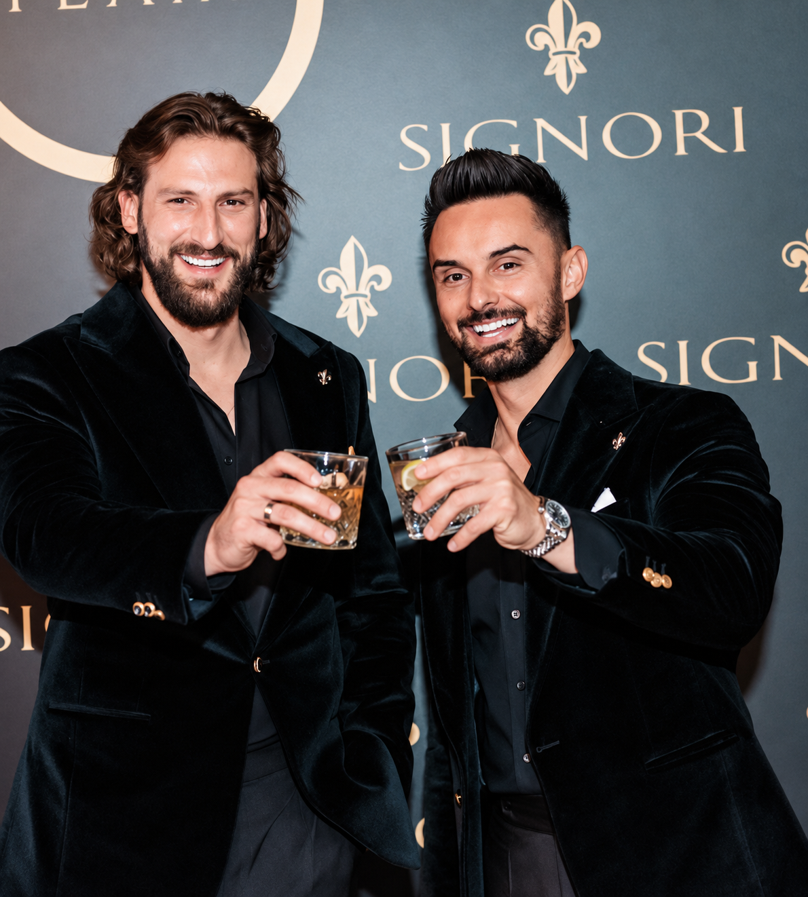
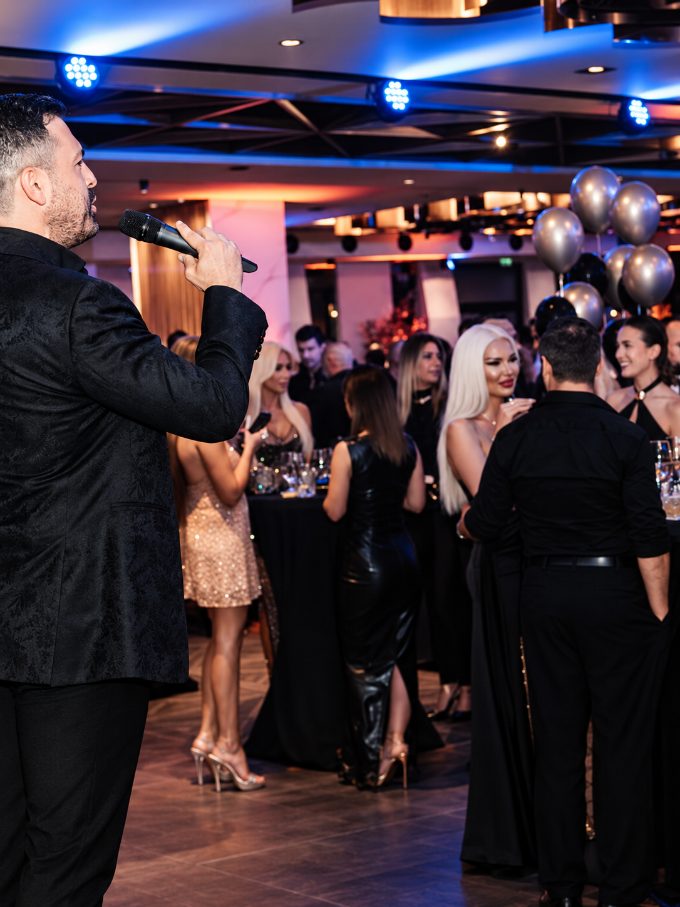
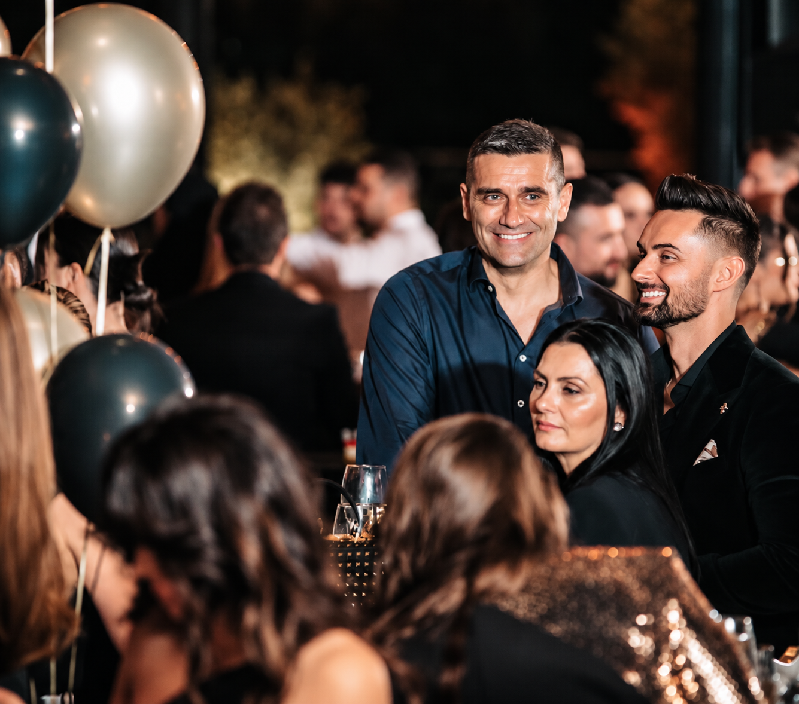
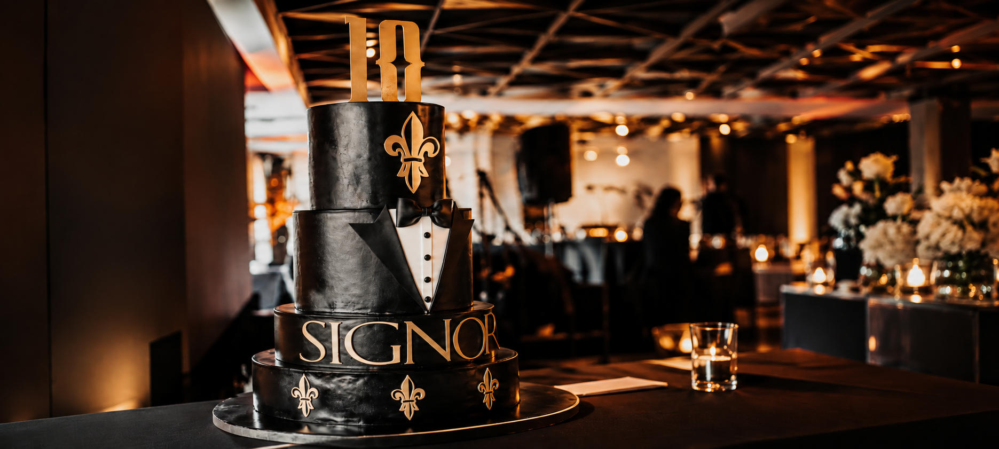

In 2024, SIGNORI marked ten years of growth, craftsmanship and dedication to bespoke tailoring. A decade of creating garments shaped around the individual had established a distinctive identity built on refined menswear and personal service.

Ten years brought countless garments, moments and stories that became part of the SIGNORI legacy. Each chapter added to the character of the house, shaping the journey that continues today.


For ten years, SIGNORI has been defined by the pursuit of refined tailoring, individual expression and lasting quality. From its earliest creations to today, each garment has contributed to a distinct identity shaped by craftsmanship and a personal approach to menswear. This decade marks not only a milestone, but the foundation for what comes next.
